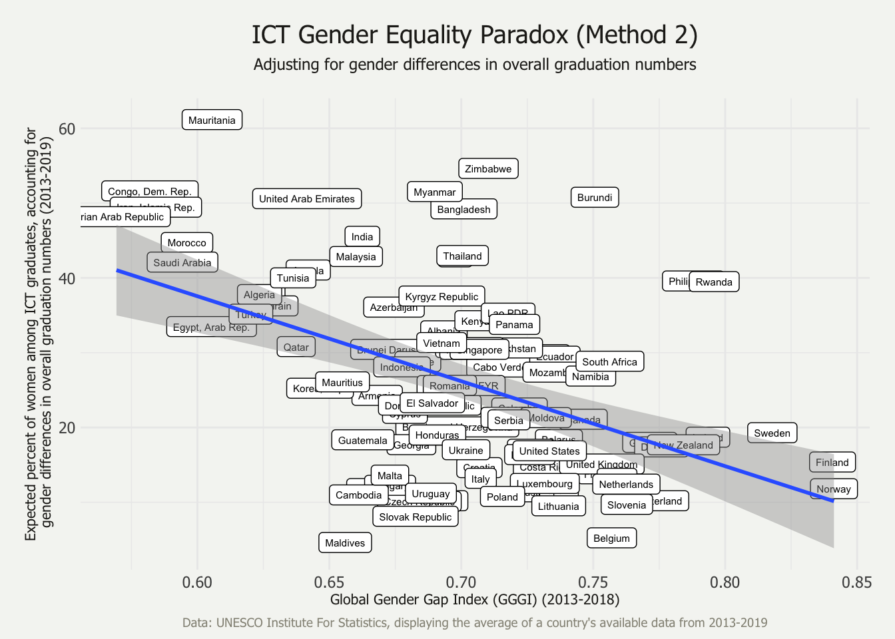

Chapter 5 Results
5.1 The ICT-GEP using percent_of_ict data (correlation method #1)
After an investigation of the data used in the UNESCO Thinkpiece, this method exactly replicates the method employed there given the available information. For example, this analysis examines 102 countries, whereas the Thinkpiece appears to examine 79. Because the method for selecting those 79 countries is unknown, that aspect is not replicated. The Thinkpiece also provides no inferential statistics regarding the correlation depicted in the ICT-GEP plot. Using the same correlation method, but 102 country’s data, the GGGI and the percent of women among ICT graduates are moderately, negatively correlated (r = -0.43, p < 0.001).
5.2 The ICT-GEP after adjusting the percentages to reflect when equal numbers of men and women graduate with tertiary degrees within each country
This method replicates Stoet & Geary’s (2018) propensity method, where they estimate the percentage of women among STEM graduates when there are an equal number of men and women graduates overall. In this case, in the formula \(a/(a + b)\), \(a\) represents the percentage of women graduates who graduate from an ICT program, and \(b\) represents the percentage of men graduates who graduate from an ICT program. Stoet & Geary (2018) explain that they use Spearman’s correlation coefficient because some of the variables are not normally distributed. However, the variables are continuous, and it is a misconception that variables must be normally distributed in order to use the more robust Pearson’s correlation coefficient (Nefzger & Drasgow, 1957). Following the propensity method, but using the Pearson test, GGGI is moderately, negatively correlated with the estimated percentage of women among ICT assuming equal graduation numbers of men and women (r = -0.47, p < 0.001). For the sake of comparison (though not endorsed), the propensity method paired with Spearman’s test also results in a moderate, negative correlation (\(\rho\) = -0.40, p < 0.001) to a lesser extent.

5.3 The ICT-GEP as a function of the disparity between ICT graduation rates for men and women
The final method is unique from the methods utilized or posed by Stoet & Geary, Richardson et al., and UNESCO. This disparity method considers the correlation between the GGGI and the disparity between the percent of women graduates and percent of men graduates who graduate from an ICT program. There is a weak correlation between GGGI and this disparity index (r = -0.30, p < 0.01).
5.4 Correlation comparison
Are the three correlation methods equivalent to each other? One method may have more theoretical support for its usage, but this step of the analysis concerns whether that methodological decision bears any impact of the conclusions of the analysis. The three correlations compose a set of dependent, overlapping correlations. That is, the correlations are dependent on each other because all three share a common variable, the GGGI. The cocor() function from the cocor package (Diedenhofen & Musch, 2015) was used with the formula for dependent, overlapping correlations to test for a significant difference between each pair of the correlations. Ten different tests2 were run for each comparison; the results of the three comparisons reflects unanimous results from the ten tests. Results of Steiger’s (1980) test are reported.
The correlation results from Method #1 and Method #2 are equivalent (z = 0.9674, p = 0.33), thus, using either the raw percentage of women among ICT graduates or the expected percentage adjusted for the gender disparity in overall graduation results in statistically equivalent correlations with the GGGI.
The correlation results from Method #1 and Method #3 are also equivalent (z = -1.32, p = 0.19), thus using either the raw percentage of women among ICT graduates or the disparity between the percentage of women versus men graduates who graduate from ICT programs results in statistically equivalent correlations with the GGGI.
Lastly, the correlation results from Method #2 and Method #3 are not equivalent (z = -2.30, p < 0.05). Though Methods #2 and #3 do not produce equivalent correlations, the two methods debated by Stoet & Geary (2020) and Richardson et al. (2020) do produce equivalent correlations. Similarly, Stoet & Geary (2020) re-analyzed the STEM-GEP using Method #1, which also resulted in a statistically significant, moderate, and negative correlation. However, Stoet & Geary (2020) did not statistically test for the equivalence of the two correlations, which could have strengthened their argument.
References
Diedenhofen, B., & Musch, J. (2015). Cocor: A Comprehensive Solution for the Statistical Comparison of Correlations. PLOS ONE, 10(4), e0121945. https://doi.org/10.1371/journal.pone.0121945
Nefzger, M. D., & Drasgow, J. (1957). The needless assumption of normality in Pearson’s r. American Psychologist, 12(10), 623–625. https://doi.org/10.1037/h0048216
The ten tests for correlation comparison are Pearson and Filon’s z (1898), Hotelling’s t (1940), Williams’ t (1959), Olkin’s z (1967), Dunn and Clark’s z (1969), Hendrickson, Stanley, and Hills’ (1970) modification of Williams’ t (1959), Steiger’s (1980) modification of Dunn and Clark’s z (1969) using average correlations, Meng, Rosenthal, and Rubin’s z (1992), Hittner, May, and Silver’s (2003) modification of Dunn and Clark’s z (1969) using a backtransformed average Fisher’s (1921) Z procedure, and Zou’s (2007) confidence interval↩